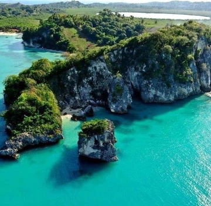
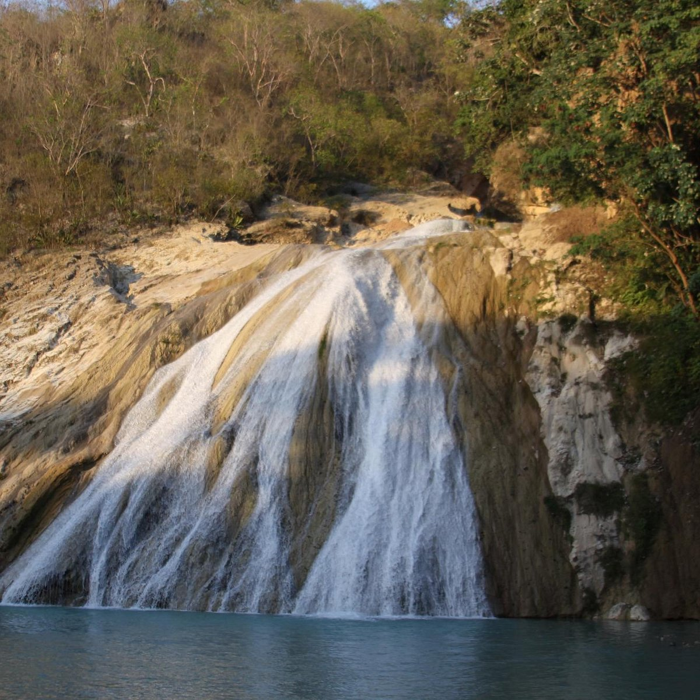
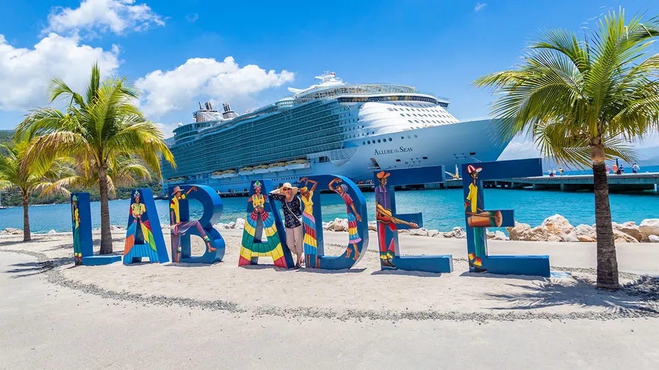
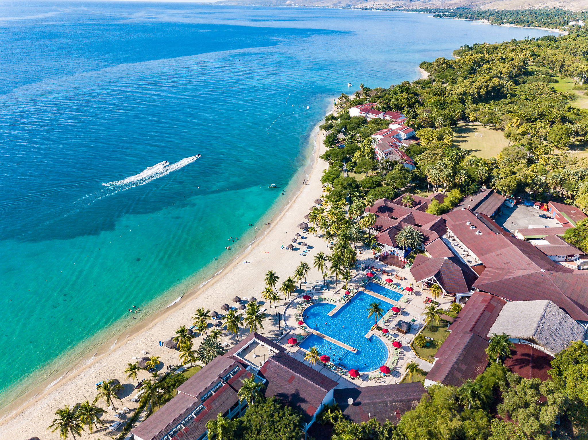

Douze lieux, quatre strates de mémoire
Chaque destination est rattachée à la strate patrimoniale qu'elle illustre le mieux. Certains lieux pourraient en recouper plusieurs — le classement retenu ici privilégie leur dimension la plus significative.
Résistance & Indépendance
Les lieux où s'est jouée, militairement et symboliquement, la naissance de la première république noire indépendante.

Architecture & Villes
Des villes et bâtiments qui témoignent de deux prospérités différentes : celle du royaume du Nord et celle du commerce marchand.


Nature & Territoire
La diversité des paysages haïtiens : montagnes, cascades, littoraux et îles, souvent absents des circuits touristiques classiques.

Bassin Bleu
Sud-Est — trois bassins turquoise près de Jacmel.

Parc National La Visite
Sud-Est — plateau d'altitude et forêts de pins.

Île-à-Vache
Sud — une île préservée au large des Cayes.

Bassin Zim
Centre, Hinche — cascade et grottes du Plateau Central.

Saut-Mathurine
Sud, Camp-Perrin — la plus haute cascade du pays.

Plage de Labadie
Nord — criques abritées près de Cap-Haïtien.

Côte des Arcadins
Ouest — plages et îlots entre Port-au-Prince et Saint-Marc.
Croyances & Traditions
Le patrimoine immatériel, transmis à travers les récits locaux et les usages du territoire — présenté ici à travers un lieu qui l'incarne particulièrement.
Le patrimoine immatériel est développé plus en détail sur la page Histoire & culture.